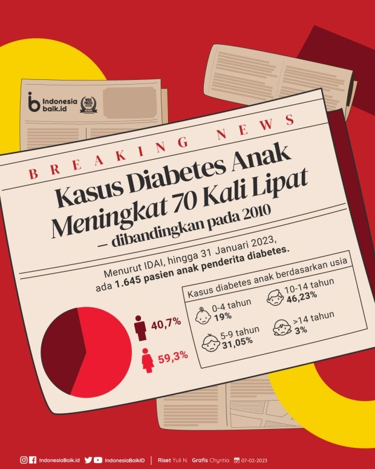

Angka Kejadian Diabetes Melitus Pada Anak Indonesia
Tahukah kamu? Menurut data dokter anak di Indonesia, pada tahun 2023, ada 1.645 anak berusia 0–18 tahun yang terkena diabetes. Itu jumlah yang cukup banyak, ya!
Kasus diabetes pada anak terus bertambah setiap tahun. Misalnya, pada tahun 2023, jumlah anak yang terkena diabetes naik hingga 70% dibandingkan sebelumnya. Hal ini menunjukkan pentingnya kita menjaga kesehatan tubuh dengan pola hidup sehat.
Sayangnya, pada tahun 2019, ada sekitar 1,5% anak yang terkena diabetes dan mengalami komplikasi hingga meninggal dunia. Jadi, kita harus lebih peduli menjaga diri dan mencegah diabetes sejak dini.
